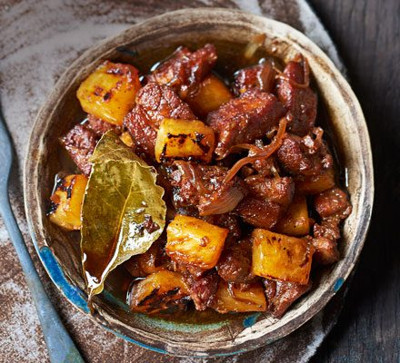

Pork Adobo
A classic savory pork Filipino Dish

This is a recipe post for Filipino Pork Adobo. It is a dish composed of pork slices cooked in soy sauce, vinegar, and garlic.
There are version wherein onions are also added. Chicken Adobo probably the most popular version of this dish, but this one is as good as well.
Ingredients
- 2lbs. pork belly sliced into strips
- 2 cups coconut milk
- 2 cups coconut cream
- 1/4 cup shrimp paste or salted krill
- 5 cloves of garlic crushed
- 5 pieces Thai chili pepper chopped
- 2 thumbs ginger minced
- 1 piece onion chopped
- 2 pieces Serrano pepper sliced
- 1 cup water
- 8 grams Maggi Magic Sarap
Steps
- Combine pork, ginger, garlic, onion, Thai chili pepper, long green pepper, and coconut milk in a pan. Mix well. Cover the pan and turn the heat to on. Let the mixture boil.
2 lbs. pork belly, 2 cups coconut milk, 1/4 cup shrimp paste, 5 cloves garlic, 5 pieces Thai chili pepper, 2 thumbs ginger, 1 piece onion, 2 pieces Serrano pepper
- Stir and adjust the heat to low. Cover and simmer for 50 minutes. Note: add water as necessary
1 cup water
- Add the remaining coconut cream and bagoong alamang (as needed). Season with Maggi Magic Sarap. Continue cooking in low heat until the sauce thickens around
2 cups coconut cream, 8 grams Maggi Magic Sarap
- Transfer to a serving plate and serve with warm rice. Enjoy!